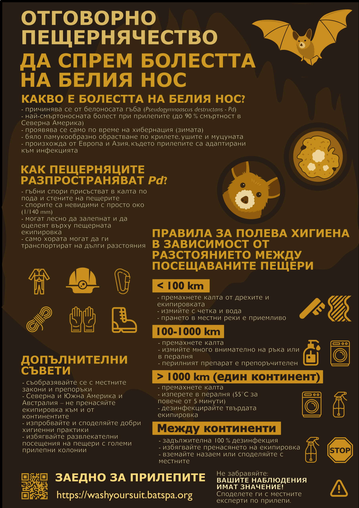

Болестта на белия нос
Ръководство за отговорно пещернячество в Европа и Азия.

Какво е болестта на белия нос?
Болестта на белия нос (ББН, позната преди като синдром на белия нос), е най-смъртоносното известно заболяване при хиберниращите видове прилепи, причинено от белоносата гъба. До момента ББН е взела няколко милиона жертви, като колониите на най-засегнатите видове прилепи в Северна Америка са намалели с повече от 90%. Тъй като прилепите могат да контролират популациите на вредни насекоми, тяхното намаляване оказва сериозно въздействие върху дивите и земеделските екосистеми, както и върху човешкото здраве. Освен това летящите бозайници са „чадърен вид“ в пещерните екосистеми, като подпомагат хранителните цикли и спомагат за поддържането на биологичното разнообразие и дори някои пещерни образувания. Следователно опазването на прилепите често означава опазване на целите пещери и всички техни обитатели.
Как да разпознаем ББН?
ББН засяга само прилепи по време на хибернация, когато телесната им температура е ниска, и не може да засегне хора или други животни. Проявява се като бял, подобен на памук гъбичен налеп по ушите, муцуната или крилете на прилепите, обикновено в края на зимата (Фигура 1). Извън Северна Америка не са известни гъби, които изглеждат подобно при наблюдение с просто око, затова визуалното наблюдение на живи прилепи често е достатъчно за поставяне на диагнозата ББН. Обикновено колкото повече гъбичен налеп се вижда, толкова по-сериозна е инфекцията. ББН не бива да се бърка с растежа на сапрофитни гъби, които се хранят с мъртва органична материя и покриват цялото тяло на умрелите прилепи или други животни, както и всякакви органични отпадъци в пещерите.

Кой е причинителят на ББН?
ББН се причинява от пещерната студолюбива гъба Pseudogymnoascus destructans, наричана още Pd или белоносата гъба (Фигура 2). Всъщност тя представлява комплекс от два вида, но тъй като съвсем наскоро открихме втория, все още не сме му дали отделно научно наименование и вместо това използваме имената Pd1 и Pd2. И двата вида се срещат в Европа и Азия, но без да предизвикват масова смъртност сред прилепите. Причината за това е, че гъбите присъстват на тези континенти от хиляди години, което е дало на прилепите еволюционно време да се адаптират към инфекцията. Обратно, Pd1 е бил въведен в Северна Америка сравнително скоро (преди около 20–30 години), където се е сблъскал с местни видове прилепи, които нямат предишен еволюционен опит с този патоген. Това явление, при което патогени навлизат в нови региони, в които преди не са съществували, и причиняват епидемии, се нарича „патогенно замърсяване“ (pathogen pollution) и често е провокирано от човешка дейност.

Защо е важно поведението на пещерняците?
Спорите на Pd, невидими с просто око (размерът им е около 1/140 от милиметъра), изобилстват в пещерния субстрат (например в калта по пода на пещерите или по стените), заедно със стотици други видове микроорганизми (гъби, бактерии и прочее). Всички те могат лесно да полепнат по пещерната екипировка (самостоятелно или заедно с калта), както доказват наши експерименти, в които изолирахме живи спори на Pd от използвани в пещери гащеризони. Показали сме също, че Pd може да оцелее върху същата екипировка поне 25 дни при стайна температура. Всичко това означава, че пещерняците могат неволно да пренесат Pd1 или Pd2 от една пещера в друга. Според генетичните ни данни точно това се е случило с Pd1, който е бил пренесен незабелязано от района на Подилия в Западна Украйна, дом на най-дългите гипсови пещери в света (Фигура 3), до пещера в щата Ню Йорк, САЩ. От друга страна, въпреки че някои видове прилепи мигрират на големи разстояния, редица изследвания показват, че животните не са ефективни преносители на Pd далеч от убежищата си.

Какво е решението?
За щастие, доброто експедиционно планиране и полева хигиена могат значително да намалят вероятността от разпространение на Pd. По-долу предлагаме конкретни хигиенни препоръки, отнасящи се до пещерняците в Европа и Азия, съобразени с разстоянието между посещаваните една след друга пещери.
Разстояния под 100 км или експедиции в рамките на един и същ пещерен район – нисък консервационен риск
На такива разстояния прилепите също могат да пренасят Pd. Ето защо отстраняването на калта от екипировката с вода и четка, както традиционно се практикува, е достатъчна хигиенна мярка (Фигура 4). Подобно почистване няма да убие или отстрани всички гъбни спори, но ще намали тяхното количество до нива, близки до тези, разпространявани по естествен път.

Разстояния между 100 и 1000 км или пътуване между различни пещерни райони в рамките на един и същ континент – умерен консервационен риск
На такива разстояния хората са по-ефективни вектори на Pd в сравнение с прилепите. Въпреки че Pd1 и Pd2 се срещат навсякъде из Европа и големи части от Азия, смесването на различни гъбни щамове би могло да създаде по-опасни варианти на патогена. Подобно нещо се е случило с хитридиевата гъба, която причинява масова смъртност сред земноводните по света. Ето защо препоръчваме пещерната екипировка да се почиства особено внимателно на ръка или да се изпере в пералня след отстраняване на калта, за предпочитане с използване на перилен препарат (Фигура 5). Според лабораторните ни експерименти старателното изчеткване с вода премахва около 95% от спорите на Pd, първоначално налични върху парчета от кордура, а машинното пране с препарат премахва над 99,5% от тях. При парчета от статично въже изчеткването с вода отстранява около 85% от Pd, а машинното пране със специализиран препарат, безопасен за подобно оборудване, може да премахне до 98% от Pd. Ако посещавате друг пещерен клуб в различен пещерен район, особено ако е в друга държава, най-добре е да използвате тяхната обща екипировка.

Разстояния над 1000 км в рамките на същия континент – висок консервационен риск
На това разстояние рисковете, свързани с генетичен обмен между различни щамове на Pd, вече са значителни, следователно е необходимо да се премахнат или убият всички гъбни спори от пещерната екипировка. Най-добрата експериментално потвърдена практика е прането при температура над 55 °C за повече от 5 минути (доказано убива Pd). Екипировка, която не подлежи на пране, например фотоапарат, може да се дезинфекцира с алкохол или друг подобен препарат, разбира се, след пълното премахване на калта. Оставете всяка екипировка, която нито може да бъде изпрана на висока температура, нито дезинфекцирана, например въжетата, и вместо това използвайте местно оборудване. Когато напускате мястото на експедицията, уверете се, че цялата използвана екипировка е поставена в чисти торби, за да не замърси чистата екипировка или автомобила ви. Добра идея е и почистването на самия автомобил непосредствено след експедицията – това ще помогне не само за предотвратяване разпространението на Pd, но и на други микроорганизми, обитаващи почвата. За по-подробни протоколи за дезинфекция и актуални списъци на препарати, тествани срещу Pd, можете да посетите: https://www.whitenosesyndrome.org/static-page/decontamination-information.
Междуконтинентални пътувания – много висок консервационен риск
Пренасянето на Pd1 или Pd2 в нови места, където те понастоящем не се срещат, може да предизвика втора вълна от смъртоносни епидемии на ББН, които не могат да бъдат спрени впоследствие. Затова всяко оборудване, което се пренася между континенти, трябва да бъде 100% дезинфекцирано, а обувките и дрехите ви – напълно чисти. Не носете нищо, което може да съдържа дори и минимални следи от пещерен субстрат.
Мерки, възприети на други континенти
Когато посещавате пещери в Северна Америка, необходимо е да спазвате местните препоръки, достъпни тук: https://www.whitenosesyndrome.org/static-page/decontamination-information. За разлика от настоящите, тези препоръки се основават на наличието или отсъствието на Pd, а не на разстоянието между пещерите. Накратко, в райони, където прилепите масово умират заради ББН, всяко пещерно посещение се счита за високорисково от гледна точка на опазването на природата, и екипировката се дезинфекцира след всяко посещение на пещера. Пренасянето на екипировка от райони, по-силно замърсени с Pd, към по-слабо замърсени райони носи особено висок риск и най-добре да не бъде допускано. Редовно актуализирана карта на съответните райони, както и списък на местните дезинфекциращи агенти, тествани срещу Pd, може да намерите на горепосочената страница. Най-добрата хигиенна практика остава прането при температура над 55 °C за повече от 5 минути. Някои хора, основно учени, използват еднократни пещерни костюми, но те рядко са практични за сериозни пещерни експедиции. В никакъв случай не пренасяйте пещерно оборудване от и към континента.
В Австралия и Южна Америка Pd все още не е установен. Прогнозни изследвания обаче показват, че смъртност сред прилепите вследствие на ББН е вероятна, тъй като много пещери предлагат подходящи условия за Pd, а местните видове прилепи не са адаптирани към гъбата. Ето защо пещерно оборудване не бива да се пренася от други континенти. В рамките на континентите може да се спазват гореописаните хигиенни правила, основани на разстоянието, за да се предотврати патогенно замърсяване с други микробни видове. Повече информация можете да намерите тук: https://wildlifehealthaustralia.com.au (за Австралия).
С какво още можете да помогнете?
Настоящите хигиенни инструкции се основават на най-добрите научни данни, налични към момента, но винаги има място за подобрение. Не се колебайте да споделяте идеи за почистване на пещерно оборудване, които да бъдат едновременно лесни за прилагане и щадящи околната среда. След посещение на пещера, където Pd е в особено големи количества, или преди влизане в новооткрита пещера, пещера без естествен вход или такава, която е особено чувствителна по други причини, е разумно да преминете към по-стриктната хигиенна категория. Не забравяйте да се информирате за местното законодателство и ограниченията за достъп до пещери. За пещери, обитавани от големи колонии прилепи, избягвайте посещения с развлекателна цел по време на размножителния им период или хибернацията.
И накрая – биолозите, които изучават прилепи, са малко, но пещерняците са много – и вашите наблюдения са безценни. Можете да се свържете с местни експерти по прилепи или с нашия екип и да докладвате броя на прилепите и всички признаци на заболяване или необичайна смъртност. При подаване на сигнал включете името на пещерата, точното ѝ местоположение, дата, броя на живите и мъртвите прилепи, както и снимки. Отбележете всяко необичайно поведение на прилепите, видими признаци на ББН или скорошна човешка дейност. Добавете и контакт за обратна връзка.

Благодарности
Благодарим на всички пещерняци, които допринесоха за изготвянето на настоящите препоръки със своите съвети или попълниха социологическото ни проучване за хигиенните навици сред пещерняческата общност.
Библиография
- Cheng TL, Reichard JD, Coleman JTH, Weller TJ, Thogmartin WE, Reichert BE, Bennett AB, Broders HG, Campbell J, Etchison K, Feller DJ, Geboy R, Hemberger T, Herzog C, Hicks AC, Houghton S, Humber J, Kath JA, King RA, Loeb SC, Massé A, Morris KM, Niederriter H, Nordquist G, Perry RW, Reynolds RJ, Sasse DB, Scafini MR, Stark RC, Stihler CW, Thomas SC, Turner GG, Webb S, Westrich BJ, Frick WF (2021) The scope and severity of white-nose syndrome on hibernating bats in North America. Conservation Biology 35: 1586–1597. https://doi.org/10.1111/cobi.13739
- Fischer NM, Dumville I, Nabholz B, Zhelyazkova V, Stecker RM, Blomberg AS, Dool SE, Fritze M, Tilak MK, Bashta AT, Chenal C, Fiston-Lavier AS, Puechmaille SJ (2025) Two distinct host-specialized fungal species cause white-nose disease in bats. Nature. https://doi.org/10.1038/s41586-025-09060-5
- Fritze M, Puechmaille SJ, Fickel J, Czirják GA, Voigt CC (2021) A Rapid, in-Situ Minimally-Invasive Technique to Assess Infections with Pseudogymnoascus destructans in Bats. Acta Chiropterologica 23: 259–270. https://doi.org/10.3161/15081109ACC2021.23.1.022
- Gargas A, Trest MT, Christensen M, Volk TJ, Blehert DS (2009) Geomyces destructans sp. nov. associated with bat white-nose syndrome. Mycotaxon 108: 147–154. https://doi.org/10.5248/108.147
- Leopardi S, Blake D, Puechmaille SJ (2015) White-nose syndrome fungus introduced from Europe to North America. Current Biology 25: R217–R219. https://doi.org/10.1016/j.cub.2015.01.047
- Lorch JM, Meteyer CU, Behr MJ, Boyles JG, Cryan PM, Hicks AC, Ballmann AE, Coleman JTH, Redell DN, Reeder DM, Blehert DS (2011) Geomyces destructans causes white-nose syndrome. Nature 480: 376–378. https://doi.org/10.1038/nature10590
- Puechmaille SJ, Wibbelt G, Korn V, Fuller H, Forget F, Mühldorfer K, Kurth A, Bogdanowicz W, Borel C, Bosch T, Cherezy T, Drebet M, Görföl T, Haarsma AJ, Herhaus F, Hallart G, Hammer M, Jungmann C, Le Bris Y, Lutsar L, Masing M, Mulkens B, Passior K, Starrach M, Wojtaszewski A, Zöphel U, Teeling EC (2011) Pan-European distribution of white-nose syndrome fungus (Geomyces destructans) not associated with mass mortality. PLoS ONE 6. https://doi.org/10.1371/journal.pone.0019167
- Zhelyazkova V, Hubancheva A, Radoslavov G, Toshkova N, Puechmaille SJ (2020) Did you wash your caving suit? Cavers’ role in the potential spread of pseudogymnoascus destructans, the causative agent of white-nose disease. International Journal of Speleology 49: 145–155. https://doi.org/10.5038/1827-806X.49.2.2326
- Zhelyazkova V, Tičar J, Deleva S, Ivanov A, Toshkova N, Puechmaille S (2025) Cavers’ knowledge of biosecurity and its influence on the prevention of white-nose disease. Subterranean Biology 52: 45–68. https://doi.org/10.3897/subtbiol.52.140425
- Zukal J, Bandouchova H, Brichta J, Cmokova A, Jaron KS, Kolarik M, Kovacova V, Kubátová A, Nováková A, Orlov O, Pikula J, Presetnik P, Šuba J, Zahradníková Jr. A, Martínková N (2016) White-nose syndrome without borders: Pseudogymnoascus destructans infection tolerated in Europe and Palearctic Asia but not in North America. Scientific Reports 6: 19829. https://doi.org/10.1038/srep19829